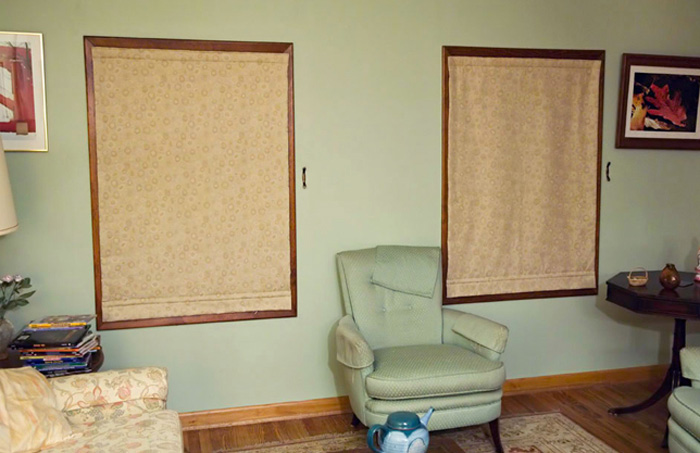
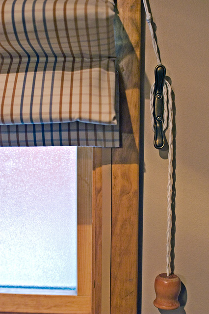
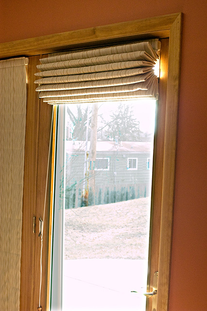
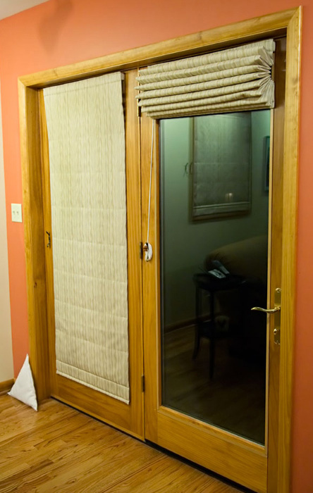

The photograph above shows two roman shades made with Warm Window insulation from the Warm Company. The insulation consists of five layers, including one reflective layer. The system works with magnetic strips attached to the windows and inside the shades to provide a nearly air tight fit when the shades are closed. The Warm Company claims that these shades provide an insulation of over R-7 with a single glazed window. I'm not sure how they arrive at this figure, but it does seem overly optimistic.
With our double glazed windows, I estimate an R-value of about six or double the R-value of the windows alone. I determined this by comparing the temperature outside with the temperature between the shade and the window, and temperature inside the house.
Our shades were assembled by Jo Anne at Cozy Curtains since neither I nor my wife is particularly expert at sewing. Overall we are very pleased with these shades and the insulation they provide.
|
photographs by bernard Insulated Window Shades |
|||||||||
|  | |||||||||
|  |  | ||||||||
|
The two photographs above show the details of the shades. The photograph on the left shows the shade pulled partially up. The magnetic strip can be seen on the wood trim. The strip has been painted to match the color of the wood. The photograph on the right shows a shade that is completely raised on the patio door. Looking closely, you can see the cord on the left wound around the bracket to hold the shade up.
|
|||||||||
|  | |||||||||
Warm Window insulated shades on our two north facing living room windows